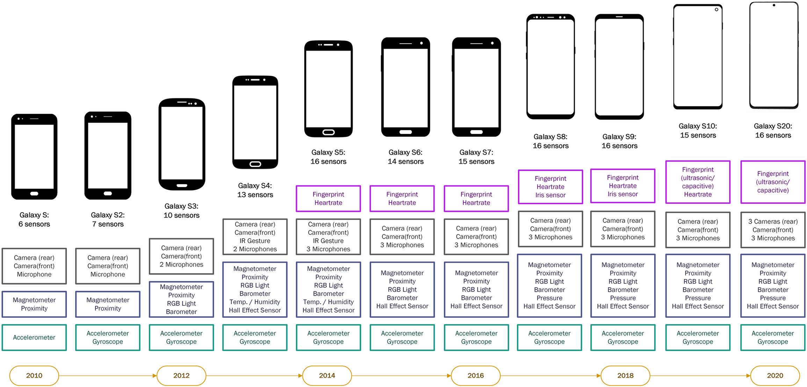
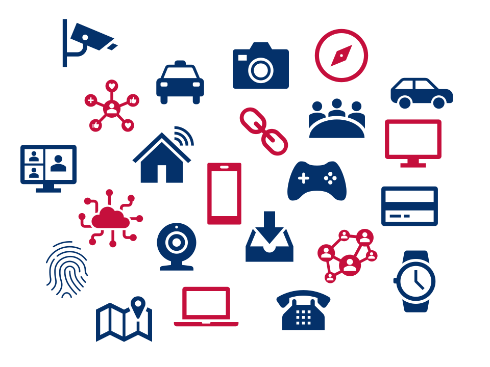

| Session | Datum | Time | Topic |
|---|---|---|---|
| 1 | 24.10.2024 | 09:45 - 11:15 | üöÄ Kick-Off |
| ✏️ Independent study and assignments | |||
| 2 | 09.01.2026 | 09:00 - 16:00 | üìö From Theory to Questionaire |
| 3 | 23.01.2026 | 09:00 - 16:00 | üìö From Questionaire to Pretest |
| 4 | 23.01.2026 | 09:00 - 16:00 | üìö From Pretest to Analysis |
| 5 | 30.01.2026 | 09:00 - 16:00 | üìö Analysis & Evaluation |
Kick-Off
Session 01
23.10.2024
Agenda
print("Hello course!")
Dr. Christoph Adrian
- B.A. & M.Sc. Sozialökonomik und Dr. @ FAU ➞ now statArts GmbH
- Text as Data & Social Media Usage (Effects)
- Fließend in R, Grundkenntnisse in Python, SPSS & Stata
- #gerneperdu
Und nun zu Ihnen!
Vorstellungsrunde
- Wie heißen Sie?
- Was studieren Sie aktuell?
- Erfahrungen mit Kommunikationswissenschaft?
- Was verstehen Sie unter digitalen Verhaltensdaten (DBD)?
- Was ist eine Außenwerbung, die Ihnen besonders im Gedächtnis geblieben ist?
An Abundance of Possibilites
Warum eigentlich Digital Behavioral Data?
Mehr Daten durch fortschreitende Digitalisierung
Beispiel: Wachsenden Anzahl eingebauter Smartphone-Sensoren
Graphik aus Struminskaya et al. (2020)
Verknüpfung mit dem digitalen Raum
Trend der Digitalisierung von Verhaltensweisen und Aktivitäten

Einschränkungen
- Selektive Nutzung von bestimmten digitalen Geräten bzw. Funktionen
- Kategorisierung ist Momentaufnahme und nicht überschneidungsfrei
Ein Definitionsversuch von DBD
nach Weller (2021)
… fasst eine Vielzahl von möglichen Datenquellen zusammen, die verschiedene Arten von Aktivitäten aufzeichnen
… können dabei helfen, Meinungen, Verhalten und Merkmale der menschlichen Nutzung digitaler Technologien zu erkennen

Die Lernziele des Kurses
Die Studierenden werden …
- einen Überblick über die zentralen Möglichkeiten von DBD und die damit verbundenen Herausforderungen bei der Datenerhebung und -aufbereitung bekommen
- lernen die Stärken und Schwächen verschiedener Methoden zur Erhebung von DBD bewerten
- zentrale Anforderungen an Datenschutz, Forschungsethik und Datenqualität kennen und verstehen lernen
- zentrale sozialwissenschaftliche Methoden zur Analyse von DBD kennenlernen
- das Wissen über DBD, Statistik und Datenanalyse in eigenen kleinen Projekten zu üben und anzuwenden
Öffentliche visuelle Kommunikation
Projektarbeit zur Wahrnehmung und Wirkung von öffentlicher Außenwerbung mit DBD (und
Außenwerbung - was ist das eigentlich?
Verschiedene Typen von Außenwerbung
Visuelle Kommunikation trifft DBD
Hintergrund zum Seminar
Außenwerbung als visuelles Kommunikationsmedium:
- macht sichtbar, wie Botschaften im öffentlichen Raum gestaltet und wahrgenommen werden
- visuelle Daten (z. B. Fotos, Motive) sind zentral, um diese Formen empirisch zu erfassen und zu analysieren.
Verknüpfung mit digitalen Verhaltensdaten:
- ermöglicht die Analyse, wie visuelle Werbereize mit digitalen Spuren (z. B. Suchverhalten, Social-Media-Aktivität oder Standortdaten) zusammenhängen
Kartographierung verschiedener Außenwerbung
Grundidee des Seminars: Verknpüfung von empirische Dokumentation und Analyse
- Teilnehmende entwickeln eigene Forschungsdesigns zur Erfassung von Werbeformaten, Motiven und Wirkungen (z.B. Experience Sampling, Bild- und Textdokumentation oder Befragung)
- Je nach Forschungsfokus, Umsetzung und Datenverfügbarkeit können Teilnehmende quantitative oder qualitative Ansätze wählen (z.B. (automatisierte) visuelle Inhaltsanalyse, MLM-Analyse von Umfragedaten, Nutzung geospatialer Daten)
- Einschränkung: kein Schwerpunkt auf ikonographischen Analysen
Messwiederholung in kurzen Abständen
Beispiel für Forschungsdesign: Intensive Longitudinal Designs
“an intensive longitudinal design involves sequential measurements on five or more occasions during which a change process is expected to unfold within each subject (e.g., person or other sampling (Bolger & Laurenceau, 2013)
Variationen der Variationen
Verschiedene Methoden und Varianten des Situationssamplings
Erhebungsmethoden
- üñäÔ∏è Diary Studies
- ü߆ Day Reconstruction Method (DRM)
- üì± Experience Sampling Method (ESM)
Samplingvarianten nach Masur (2019):
- ⏰ Time-based Sampling (Daily, Interval or Intensive)
- üé≤ Random Sampling
- üí° Event-based Sampling (Self-sampling & Automatic)
- Kombinationen der Sampling Methoden
Any questions so far?
Fragen zur Kursidee bzw. dem Kursthema
Organisatorisches
Kommunikation, Prüfungsleistungen, Ablauf
(Vorläufiger) Seminarplan
StudOn & Github
Materialien und Kommunikation im Kurs
- Informationen zu Kurs (Semesterplan, Syllabus, Prüfungleistungen etc.) & den einzelnen Sitzungen (Slides, Literatur und ggf. Übungsmaterial) finden sich auf der Github-Kursseite
- Ausgewählte Literatur sowie Datensätze werden auf StudOn bereitgestellt
- Für die Kommunikation gilt
- Ankündigungen werden über den StudOn-Verteiler versendet
- f√ºr Fragen zum Kurs nutzten Sie bitte das üöß Forum
- Kontakt über E-Mail bitte nur bei persönlichen Anliegen, die nicht für die Gruppe relvevant sind.
What is expected
Leistungsanforderungen
- Regelmäßig aktive Teilnahme an Sitzungen
- max. zwei unentschuldigte Fehltermine bzw. eine komplette Vormittags-/Nachmittagssession eines Blockseminars (Kulanzregelung), bei Krankheit zählen die Fehltermine mit
- Bearbeitung von vier Assignments im Rahmen eines Portfolios
- Prüfungsleistungen bauen aufeinander auf bzw. decken verschiedene Aspekte des Forschungsprozesses ab
- Verteilung der Prüfungsleistungen über das Semester hinweg statt Konzentration im Januar
- Blockkurse mit hohem Praxisanteil erfordern Vorarbeit
Theorie ➞ Feedback ➞ Praxis ➞ Reflexion
Die Prüfungsleistungen im Überblick
- Idee hinter den Prüfungsleistungen:
- Eigenständige Aneignung von theoretischem und methodischen Grundkenntnissen bis zu den Blockterminen auf Basis zur zur Vergüng gestellter & selbst recherchierter Literatur
- Fokus auf Anwendung, Umsetzung & Refexion der Projekte in den Blockterminen
- Die vier Prüfungsleistungen sind:
Theoretisches & methodisches Fundament legen
Informationen zum Research Project Sketch (Gruppenleistung - 30 Pkt.)
- Arbeitsauftrag:
- Jede Gruppe (2-4 Personen) erstellt eine methodische Forschungsprojektskizze (1.000–1.500 Wörter), die in den Blockterminen als Ausgangspunkt für die Umsetzung eines Projektes dient (fokussiert auf kohärentes methodisches Design, nicht auf umfassende Theorie).
- Elementarer Bestandteil: Erstellung eines Kurzfragebogenentwurfs (max. 6 Fragen, 1–2 Minuten)
- Abgabefrist: 15.12.2025, 23:59 Uhr als PDF an christoph.adrian@fau.de
- Besonderheit: Optionales Feedbackgespräch (max 30 min.) für jede Gruppe in den letzten beiden Novemberwochen
Feedback geben (lernen)
Informationen zum Peer Review (Einzelleistung - 20 Pkt.)
- Arbeitsauftrag:
- Jede Person erhält eine Forschungsprojektskizze einer anderen Gruppe zur kritischen Begutachtung.
- Bewertung mit Hilfe eines digitalen Peer-Review-Formular (bestehend aus Skalen- und offenen Fragen).
- Abgabefrist: Zwischen 20.12.2025 und 05.01.2026 Feedback-Formular ausfüllen
- Ziel: Alle Gruppen erhalten vor Blockterminen wertvolles Feedback zur Verbesserung ihrer Forschungsprojektskizze
You need your data!
Informationen zur Pre-Test Participation (Einzelleistung - 20 Pkt.)
- Arbeitsauftrag:
- Verpflichtende aktive Teilnahme am Pre-Test (z.B. Mindestanzahl an Kurzfragebögen)
- Hintergrund: Test der Funktionalität, Verständlichkeit und Wirksamkeit sowie Generation von Test-Daten
- Abgabefrist: Teilnahme im Pre-Testzeitraum im Januar 2026
- Wichtig: Bewertet wird nur die aktive Teilnahme, nicht die inhaltlichen Antworten.
Reflexion der Ergebnisse
Informationen zum Implementation Report (Gruppenleistung - 30 Pkt.)
- Arbeitsauftrag:
- Beschreibung, Interpretation und kritischer Reflexion der Vorgehensweise und/oder der ersten Ergebnisse (1.000–1.500 Wörter pro Gruppe)
- Fokus liegt auf der praktischen Umsetzung des Forschungsprojekts und den Erfahrungen aus der Pretest-Phase - keine neue Theoriearbeit
- Abgabefrist: 28.02.2026, 23:59 Uhr als (gerendertes) PDF (ggf. inklusive Syntax-Dateien)
- Ziel: Verknüpfung der Forschungsprojektskizze mit den Erfahrung & ggf. ersten Ergebnissen
Kurze Zusammenfassung
Fahrplan für die Prüfungsleistungen
Bis zur ersten Blocksitzung:
- Feedbackgespräch zum Research Project Sketch in den letzten beiden Novemberwochen (optional)
- Research Project Sketch (30 Pkt.) bis 15.12.2025
- Peer Review (20 Pkt.) bis 05.01.2026
- Einarbeitung in die R-Tutorials
Mit Beginn der Blocksitzungen:
- Fokus auf praktische Umsetzung des Forschungsprojekts (Fragebogen, Datenerhebung & -auswertung)
- Input zu praktischer Umsetzung der geplanten Analysen mit R & Python
- Pre-Test Participation (20 Pkt.) während der Blocksitzungen
- Implementation Report (30 Pkt.) bis 28.02.2026
Kein Prüfungsleistung, aber Grundvoraussetzung
Durcharbeiten von
- Vermittlung des notwendigen Basiswissens für die Arbeit mit R, RStudio und Quarto mit Hilfe von zwei (Video-)Tutorials:
- Einführung in R, RStudio und Quarto von Andy Field für die Vermittlung der Grundlagen & den allgemeinen Umgang mit den Programmen
- Praktisches Arbeiten mit R des CCS Amsterdam legt Schwerpunkt auf das „inhaltliche“ Arbeiten mit R (Vorstellung von Verwendung von wichtigen Funktionen)
- Weitere nützliche Quellen finden Sie in dem Bereich Working with R auf der Kursseite
Warum
Vorbereitung auf praktische Umsetzung
- Kostenlose Software mit vielen nützlichen und beginner-friendly Tutorials
- Weit verbreitet in der Sozialwissenschaft (v.a. R für Statistik & Datenvisualisierung, Python für Machine Learning & KI)
- Breites Spektrum an Paketen für verschiedenste Datenanalyse & Visualisierung
or ? Both!
Im Kurs: Keine Verpflichtung, die eigenen Analyse mit
- Aber: Praktische Inputs und Beispiele werden sich auf
(und in wenigen Ausnahmen ggf. ) beziehen
Any questions?
Fragen zur Kursorganiation oder den Prüfungsleistungen
Where we go from here
Die nächsten Schritte im Kurs
Sonderanmeldetermin für Prüfung
Wichtige Informationen zur Prüfungsanmeldung
- Ärgerlicherweise gibt es immer wieder Studierende, die sich anmelden und betreuen lassen, aber dann einfach irgendwann (teilweise sehr kurzfristig) “verschwinden”.
- Deshalb: Nutzung des WiSo-Sonderanmeldetermin für Prüfung am 27./28.10.
Bitte berücksichtigen Sie unbedingt:
- ⚠️ Nach Ablauf des Sonderanmeldetermins ist eine An- oder Abmeldung zur Prüfung nicht mehr möglich.
- ⚠️ Nehmen Sie bitte kein Thema an, wenn absehbar ist, dass Sie nicht teilnehmen werden.
Ein Startpunkt, aber kein Endpunkt
Basisliteratur als Grundlage für die weitere Auseinandersetzung mit dem Seminarthema
Literaturliste auf der Github-Kursseite ( zur heutigen Sitzung), Dateien sp√§ter auf üöß StudOn
- Einstieg in die Thematik bzw. eine Grundlage für die weitere Auseinandersetzung
- keine umfassende Übersicht über alle relevanten Theorien, Methoden und Konzepte
- Inspiration für Themenfindung und eigene Literaturrecherche
Wichtig: Es gibt vermutlich keine Untersuchung die exakt Ihrem Forschungsinteresse entspricht
- Nutzen Sie die Literatur als Inspiration für Abwandlungen und Erweiterungen
Antworten auf offenen Fragen finden
Was die Forschungsprojektskizze beinhalten sollte
Was wollen wir untersuchen – und warum ist das Thema relevant?
→ kurze theoretische Begründung, Bezug zur bestehenden Forschung, gesellschaftliche oder mediale BedeutungWelche Forschungsfrage(n) oder Hypothese(n) leiten unser Projekt?
→ mindestens eine klar formuliert, potenziell empirisch überprüfbar Forschungsfrage (auch Methodenschwerpunkt ist ok)‼️ Wie wollen wir methodisch vorgehen?
→ Forschungsdesign, Datengrundlage, Ablauf von Datenerhebung bis Analyse inklusive technischer & methodischer Herausforderungen (z.B. Arbeit mit Logging-Daten; Datenschutz & ethische Überlegungen bei Bildern)‼️ Welche zentralen Variablen oder Konzepte wollen wir messen – und wie operationalisieren wir sie?
→ kurzer Fragebogensketch mit max. 6 Items, inklusive Wortlaut, Antwortoptionen und ggf. Quellen validierter Skalen
Feedback dann, wenn es am meisten hilft
Informationen zum Feedbackgespräch
- Ziel: Unterstützung bei der Verfeinerung und Verbesserung der Forschungsprojektskizze vor der Abgabe
- 30-minütiges Gespräch pro Gruppe, in dem die zentralen Aspekte der Skizze besprochen werden
- Mail mit Terminvorschlägen wird Anfang November verschickt
- Optional: Gerne auch konkrete Fragen vorher per Mail schicken, das gibt mir die Möglichkeit, mich vorzubereiten
Datenschutz als Endgegner
Aktueller Stand der technischen Umsetzung
- Sondierung und Evaluation möglicher Erhebungsinstrumente (z.B. Apps, Online-Tools etc.) läuft aktuell
- Wunsch-Umsetzung: App-basierte Erhebung mit Möglichkeit zum Fotoupload und Log-Funktionalität (z.B. Geo-Daten)
- Fallback-Umsetzung: Online-Kurzfragebögen zu verschiedenen Tageszeitpunkten mit Fragen zu wahrgenommener Außenwerbung (nur Beschreibung)
- Wichtig: Forschungsskizze ist unabhängig von der finalen technischen Umsetzung zu betrachten
- d.h. Fokus auf methodische Überlegungen und Forschungsdesign, nicht auf technische Details der Umsetzung
- ggf. Anpassungen an Erhebungsinstrument als Implementation Report
Kurzer Disclaimer / Realitätscheck
Sneak Preview auf die Herausforderungen der praktischen Umsetzung
- Die praktische Umsetzung des Forschungsprojekts wird Herausforderungen mit sich bringen, z.B.
- Technische Hürden bei der Umsetzung des Erhebungsinstruments (z.B. App-Programmierung, Online-Tool-Einschränkungen)
- Schwierigkeiten bei der Datenerhebung, -aufbereitung und -analyse (z.B. unvollständige Daten, Datenbereinigung, Umgang mit fehlenden Werten)
- Deshalb ist es wichtig, dass
- Sie realistische Erwartungen mitbringen und flexibel zu bleiben
- Sie wissen, dass die Programmierung und technische Umsetzung Teil meiner Verantwortung ist
- die Blocksitzungen dazu da sind, um diese Herausforderungen gemeinsam zu bewältigen
Little helpers
Nützliche Ressourcen und Tools
- Bitte nicht nur ChatGPT & Co. nutzen, sondern auch klassische wissenschaftliche Quellen
- KI-gestütze Tools, die bei der Literaturrecherche unterstützen können
- Aber: Richtlinien zur Nutzung von KI-Tools beachten
Check you inbox
Weitere Kommunikation
- Wichtige Ankündigungen und Informationen werden über den StudOn-Verteiler verschickt, z.B.
- Buchungsoptionen für Feedback-Sprechstunden
- Peer-Review-Zuweisungen
- Peer-Reviews Ihrer Forschungsprojektskizzen.
- …
Gruppeneinteilung
Final questions?
Bis zur nächsten Sitzung!
Literatur
Bolger, N., & Laurenceau, J.-P. (2013). Intensive longitudinal methods: An introduction to diary and experience sampling research. Guilford Press.
Engel, U., Quan-Haase, A., Liu, S. X., & Lyberg, L. (2021). Digital trace data (1st ed., pp. 100–118). Routledge. https://www.taylorfrancis.com/books/9781003024583/chapters/10.4324/9781003024583-8
Masur, P. K. (2019). Capturing situational dynamics: Strength and pitfalls of the experience sampling method (P. Müller, S. Geiß, T. K. Naab, & C. Peter, Eds.; Vol. 15). Herbert von Halem Verlag. https://osf.io/vx5ha
Struminskaya, B., Lugtig, P., Keusch, F., & Höhne, J. K. (2020). Augmenting Surveys With Data From Sensors and Apps: Opportunities and Challenges. Social Science Computer Review, 089443932097995. https://doi.org/10.1177/0894439320979951
Weller, K. (2021). A short introduction to computational social science and digital behavioral data. https://www.gesis.org/fileadmin/user_upload/MeettheExperts/GESIS_Meettheexperts_Introductioncss.pdf